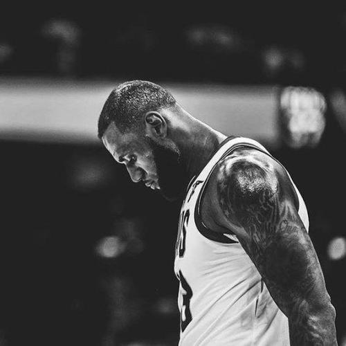

| 勒布朗·詹姆斯 | |||||
|
|||||
湖人击败开拓者虎扑11月4日讯 湖人今天在客场以114-110击败开拓者，终结对对手的16连败。 本场比赛，勒布朗-詹姆斯出战31分钟，20投9中，得到28分5篮板7助攻；贾维尔-麦基上场27分钟，8中6，得到12分9篮板6盖帽；拉简-隆多出战26分钟，10中8，得到17分10篮板6助攻3抢断。 值得一提的是，詹姆斯本场正负值为-22，这是在他职业生涯赢球的比赛中最低的正负值，此前在赢球的比赛中正负值最低的是-11。 |
|||||
|
勒布朗·詹姆斯 |